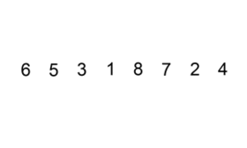

Сортировка вставками (Insertion sort) — один из простейших алгоритмов сортировки
Полагается, что начало массива уже отсортировано (изначально 1 элемент). Алгоритм берет первый неотсортированный элемент (индекс 1)
и последовательно сравнивает его с отсортированными, находя нужное место. После этого длина отсортированной части увеличивается
(теперь уже два отсортированных элемента) и алгоритм переходит к следующему элементу (индекс 2).
Этот подход хорошо виден на иллюстрации:

Пример кода:
const insertionSort = arr => {
for (let i = 1, l = arr.length; i < l; i++) {
const current = arr[i];
let j = i;
while (j > 0 && arr[j - 1] > current) {
arr[j] = arr[j - 1];
j--;
}
arr[j] = current;
}
return arr;
};
Начинаем с первого элемента (нулевой считаем отсортированным). На каждой итерации сравниваем активный элемент с отсортированными и находим его место.
Сложность:
Сложность сортировки вставками такая же, как у предыдущих алгоритмов – O(N²) в худшем случае (если массив отсортирован в обратном порядке). Алгоритм является стабильным.
Если у вас возникли трудности с понимаем работы алгоритма, можно посмотреть его визуализацию на видео: